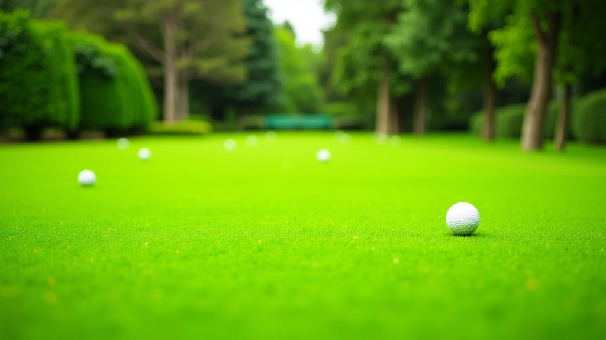
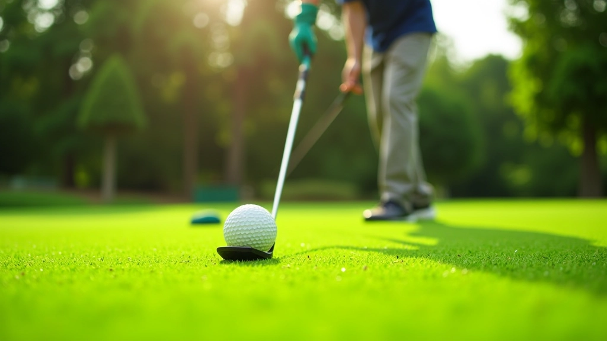
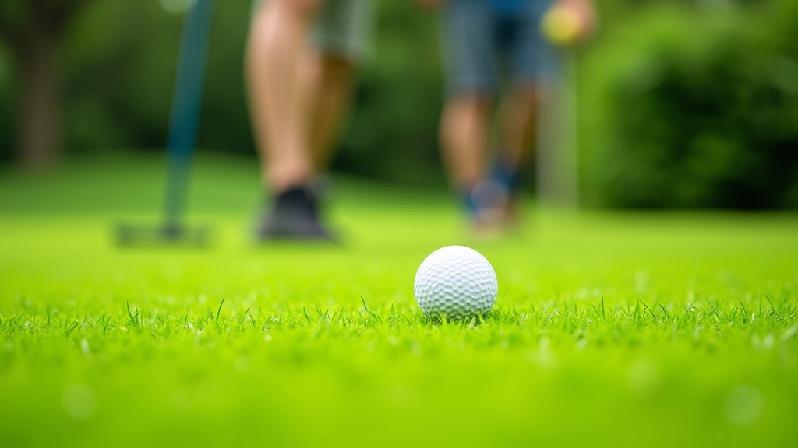
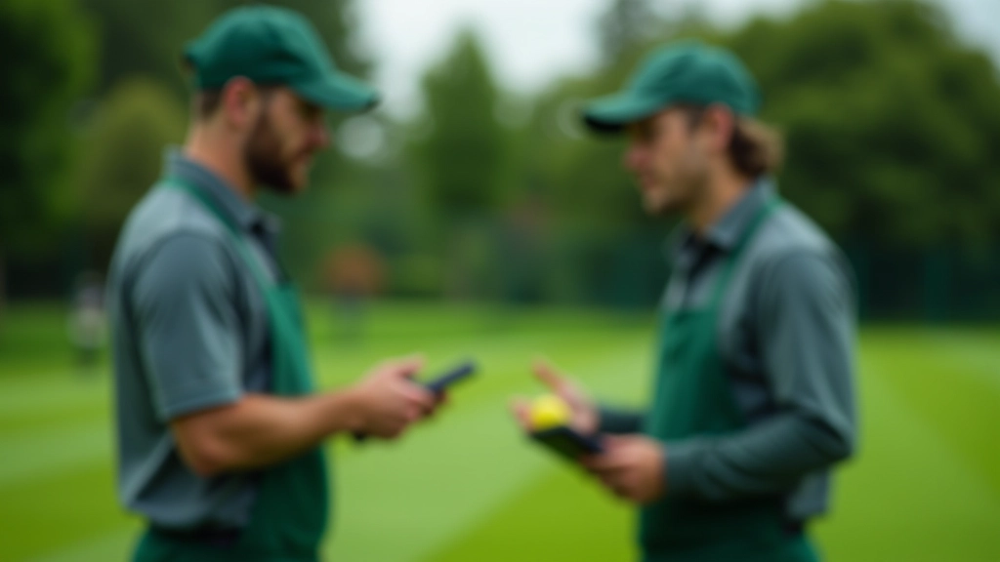

أعمالنا المنجزة
مشاريع تجهيز وصيانة ملاعب كروكيه متميزة

تجهيز ملعب كروكيه احترافي — نادي القاهرة الرياضي
تصميم وتخطيط وتجهيز ملعب كروكيه كامل من الصفر، يشمل تقييم التربة، اختيار أنواع العشب المناسبة للمناخ المصري، وتركيب أنظمة الصرف والري بما يضمن ملعب بمعايير احترافية.

برنامج الصيانة الموسمية الشاملة
برنامج صيانة منتظم على مدار السنة يتضمن القص المتخصص، التسميد والتغذية، معالجة الأمراض والآفات، مع مراقبة مستمرة لمستويات الرطوبة والكثافة لضمان جودة السطح للعب احترافي.

إعادة تأهيل ملعب متدهور
تقييم شامل لملعب قديم يعاني من تدهور، إعادة زراعة العشب في المناطق الضعيفة، معالجة مشاكل الصرف والتسوية، مع خطة إصلاح متكاملة لإعادة الملعب إلى مستوى احترافي.

برنامج التدريب والاستشارات الفنية
برنامج استشارات وتدريب عملي لفريق صيانة الملعب، يغطي أفضل الممارسات في رعاية العشب، استخدام المعدات المتخصصة، وكيفية التعامل مع التحديات الموسمية والمشاكل الشائعة.
هل تبحث عن خدماتنا؟
تواصل معنا لمناقشة احتياجات ملعبك والحصول على استشارة فنية مخصصة
تواصل معنا الآن